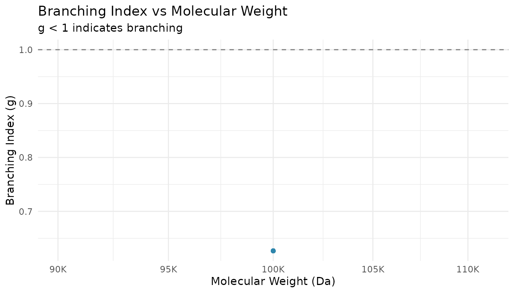
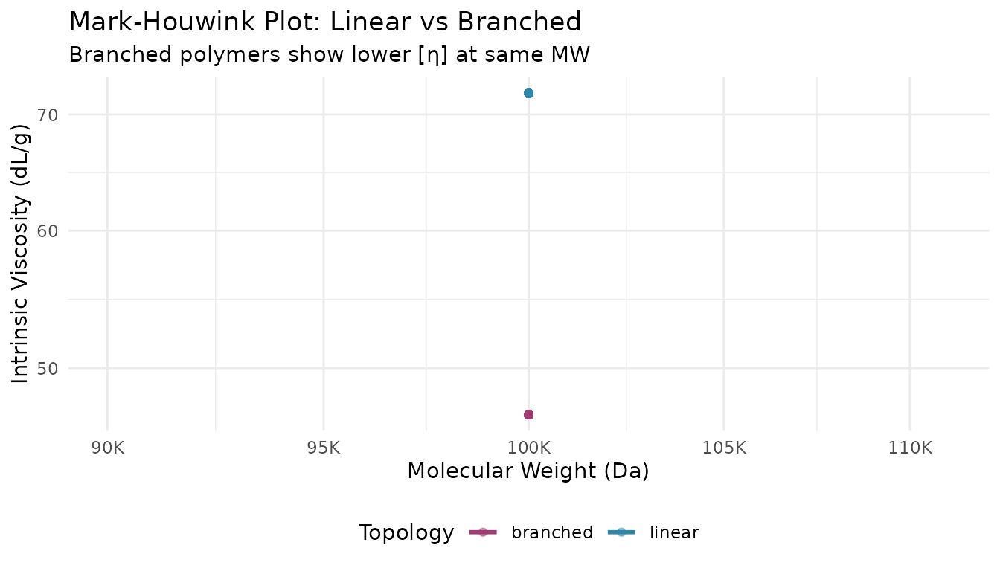
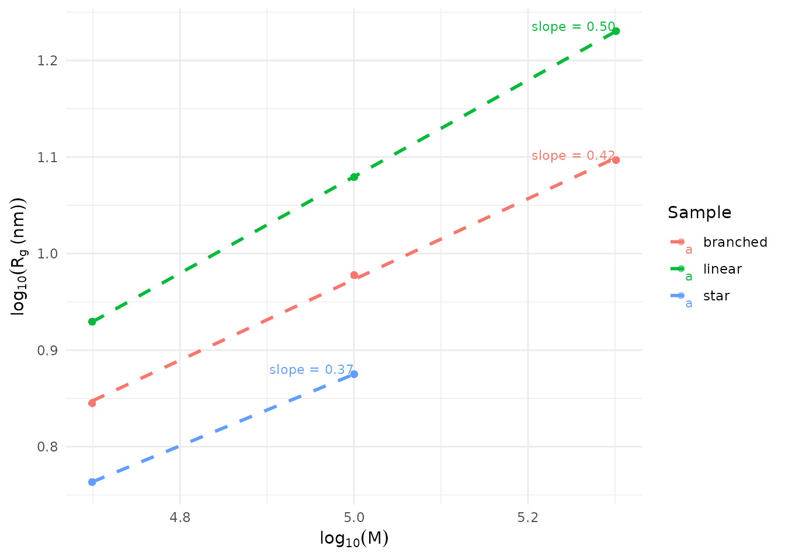

Overview
This guide shows how to analyze polymer branching using multi-detector SEC data. You’ll learn to:
- Calculate branching indices (g and g’)
- Estimate branching frequency
- Analyze Mark-Houwink parameters
- Compare branching architectures
- Visualize conformation data
Setup
library(measure)
#> Loading required package: recipes
#> Loading required package: dplyr
#>
#> Attaching package: 'dplyr'
#> The following objects are masked from 'package:stats':
#>
#> filter, lag
#> The following objects are masked from 'package:base':
#>
#> intersect, setdiff, setequal, union
#>
#> Attaching package: 'recipes'
#> The following object is masked from 'package:stats':
#>
#> step
library(measure.sec)
library(dplyr)
library(ggplot2)When You Need Branching Analysis
Branching affects polymer properties like:
- Melt viscosity: Branched polymers often have lower viscosity than linear analogs
- Mechanical strength: Long-chain branching can improve toughness
- Solution behavior: Branched chains are more compact than linear ones
SEC with MALS and viscometry detectors can quantify branching by comparing branched samples to linear references of the same molecular weight.
Example Data
The package includes sec_branched, a dataset with
linear, branched, and star polymers:
data(sec_branched)
# Sample overview
sec_branched |>
distinct(sample_id, topology) |>
print()
#> # A tibble: 8 × 2
#> sample_id topology
#> <chr> <chr>
#> 1 Linear-50K linear
#> 2 Linear-100K linear
#> 3 Linear-200K linear
#> 4 Branch-50K branched
#> 5 Branch-100K branched
#> 6 Branch-200K branched
#> 7 Star-50K star
#> 8 Star-100K star
# Preview the data structure
sec_branched |>
group_by(sample_id) |>
summarize(
mw_range = paste(round(min(mw)), "-", round(max(mw))),
mean_g = round(mean(branching_index, na.rm = TRUE), 3),
.groups = "drop"
)
#> # A tibble: 8 × 3
#> sample_id mw_range mean_g
#> <chr> <chr> <dbl>
#> 1 Branch-100K 1e+05 - 1e+05 0.65
#> 2 Branch-200K 2e+05 - 2e+05 0.55
#> 3 Branch-50K 50000 - 50000 0.75
#> 4 Linear-100K 1e+05 - 1e+05 1
#> 5 Linear-200K 2e+05 - 2e+05 1
#> 6 Linear-50K 50000 - 50000 1
#> 7 Star-100K 1e+05 - 1e+05 0.5
#> 8 Star-50K 50000 - 50000 0.6Calculating Branching Index (g)
The branching index g compares the radius of gyration of a branched polymer to a linear reference at the same molecular weight:
Values of g < 1 indicate branching (branched chains are more compact).
Using Linear Reference Data
# Extract linear and branched samples
linear_ref <- sec_branched |>
filter(topology == "linear") |>
select(mw, rg)
branched_sample <- sec_branched |>
filter(sample_id == "Branch-100K")
# Calculate g ratio using linear reference
g_result <- measure_branching_index(
mw = branched_sample$mw,
rg = branched_sample$rg,
reference = linear_ref,
method = "g"
)
#> Warning in regularize.values(x, y, ties, missing(ties), na.rm = na.rm):
#> collapsing to unique 'x' values
print(g_result)
#> Branching Analysis Results
#> ==================================================
#>
#> MW Range: 100000 - 100000
#> g (Rg ratio): 0.627 - 0.627 (mean: 0.627)
#>
#> Estimated branches/molecule: 2.6 - 2.6
#>
#> # A tibble: 701 × 2
#> mw g
#> <dbl> <dbl>
#> 1 100000 0.627
#> 2 100000 0.627
#> 3 100000 0.627
#> 4 100000 0.627
#> 5 100000 0.627
#> 6 100000 0.627
#> 7 100000 0.627
#> 8 100000 0.627
#> 9 100000 0.627
#> 10 100000 0.627
#> # ℹ 691 more rowsInterpreting g Values
| g Value | Interpretation |
|---|---|
| 1.0 | Linear polymer |
| 0.7-0.9 | Lightly branched |
| 0.4-0.7 | Moderately branched |
| < 0.4 | Highly branched (star, hyperbranched) |
# Visualize g across MW distribution
branched_with_g <- branched_sample |>
mutate(g = g_result$g)
ggplot(branched_with_g, aes(x = mw, y = g)) +
geom_point(alpha = 0.5, color = "#2E86AB") +
geom_hline(yintercept = 1, linetype = "dashed", color = "gray50") +
scale_x_log10(labels = scales::label_number(scale_cut = scales::cut_short_scale())) +
labs(
x = "Molecular Weight (Da)",
y = "Branching Index (g)",
title = "Branching Index vs Molecular Weight",
subtitle = "g < 1 indicates branching"
) +
theme_minimal()
Estimating Branching Frequency
The branching frequency (branches per molecule) can be estimated from g using Zimm-Stockmayer theory:
# Calculate branching frequency assuming random branching
freq <- measure_branching_frequency(
g = g_result$g,
architecture = "random",
mw = branched_sample$mw
)
print(freq)
#> Branching Frequency Analysis (Zimm-Stockmayer)
#> ==================================================
#>
#> Architecture: random
#> N samples: 701
#>
#> g ratio range: 0.627 - 0.627
#> Branches/molecule: 7.74 - 7.74 (mean: 7.74)
#> Branch density: 0.0774 - 0.0774 per 1000 Da
#>
#> # A tibble: 701 × 2
#> g branches_per_molecule
#> <dbl> <dbl>
#> 1 0.627 7.74
#> 2 0.627 7.74
#> 3 0.627 7.74
#> 4 0.627 7.74
#> 5 0.627 7.74
#> 6 0.627 7.74
#> 7 0.627 7.74
#> 8 0.627 7.74
#> 9 0.627 7.74
#> 10 0.627 7.74
#> # ℹ 691 more rowsDifferent Architectures
The relationship between g and branching frequency depends on polymer architecture:
# Compare architectures for the same g value
g_test <- 0.6
architectures <- c("random", "star_3", "star_4", "comb")
results <- sapply(architectures, function(arch) {
tryCatch(
measure_branching_frequency(g = g_test, architecture = arch)$branches_per_molecule,
error = function(e) NA
)
})
data.frame(
Architecture = architectures,
Branches = round(results, 2)
)
#> Architecture Branches
#> random random 8.96
#> star_3 star_3 1.00
#> star_4 star_4 1.00
#> comb comb 1.00Mark-Houwink Analysis
Mark-Houwink parameters (K and α) describe the relationship between intrinsic viscosity and molecular weight:
The exponent α provides conformational information:
| α Value | Conformation |
|---|---|
| 0.5 | Theta solvent (random coil) |
| 0.6-0.8 | Good solvent (expanded coil) |
| > 0.8 | Rod-like |
| < 0.5 | Branched/compact |
# Extract MW and intrinsic viscosity data
linear_data <- sec_branched |>
filter(topology == "linear", !is.na(intrinsic_visc), intrinsic_visc > 0)
# Calculate Mark-Houwink parameters
mh <- measure_mh_parameters(
mw = linear_data$mw,
intrinsic_visc = linear_data$intrinsic_visc
)
print(mh)
#> Mark-Houwink Parameters
#> ========================================
#>
#> K = 2.9716e-02
#> a = 0.677
#>
#> R-squared: 1.0000
#> Data points: 2103
#> MW range: 50000 - 200000
#>
#> Equation: [eta] = K * M^aComparing Linear vs Branched
# Compare Mark-Houwink plots
comparison_data <- sec_branched |>
filter(!is.na(intrinsic_visc), intrinsic_visc > 0) |>
filter(sample_id %in% c("Linear-100K", "Branch-100K"))
ggplot(comparison_data, aes(x = mw, y = intrinsic_visc, color = topology)) +
geom_point(alpha = 0.5) +
geom_smooth(method = "lm", se = FALSE, linewidth = 1) +
scale_x_log10(labels = scales::label_number(scale_cut = scales::cut_short_scale())) +
scale_y_log10() +
scale_color_manual(values = c("linear" = "#2E86AB", "branched" = "#A23B72")) +
labs(
x = "Molecular Weight (Da)",
y = "Intrinsic Viscosity (dL/g)",
color = "Topology",
title = "Mark-Houwink Plot: Linear vs Branched",
subtitle = "Branched polymers show lower [η] at same MW"
) +
theme_minimal() +
theme(legend.position = "bottom")
#> `geom_smooth()` using formula = 'y ~ x'
Rg-MW Scaling Analysis
The relationship between radius of gyration and molecular weight follows:
The exponent ν provides conformational information similar to α.
# Calculate Rg-MW scaling parameters
rg_scaling <- measure_rg_mw_scaling(
mw = linear_data$mw,
rg = linear_data$rg
)
print(rg_scaling)
#> Rg-MW Scaling Analysis
#> ========================================
#>
#> Scaling Law: Rg = K * M^nu
#>
#> nu (Flory exponent): 0.500
#> 95% CI: [0.500, 0.500]
#> K (prefactor): 3.7991e-02
#>
#> Conformation: theta solvent (ideal chain)
#>
#> R-squared: 1.0000
#> Data points: 2103
#> MW range: 50000 - 200000Comparing Branching Models
When you have experimental g data, you can compare it against theoretical predictions to identify the most likely branching architecture:
# Compare experimental data to branching models
branched_data <- sec_branched |>
filter(topology == "branched", !is.na(branching_index))
comparison <- measure_branching_model_comparison(
g = branched_data$branching_index,
mw = branched_data$mw
)
print(comparison)
#> Branching Model Comparison
#> ============================================================
#>
#> Model Fit Summary:
#> ------------------------------------------------------------
#> model parameter r_squared rmse aic
#> random 0.066439282 0.9545604 0.01740491 -11066.463
#> star 1.657330906 0.6361160 0.04925336 -6691.276
#> comb 0.007454604 0.7363526 0.04192433 -7368.910
#> hyperbranched 0.132485444 0.9303057 0.02155524 -10166.940
#> ------------------------------------------------------------
#>
#> Best Model: random (lowest AIC)
#> R-squared: 0.9546
#> RMSE: 0.0174
#> Parameter: 0.0664
#>
#> Note: Lower AIC indicates better fit with penalty for complexity.
#> Consider physical plausibility when selecting the final model.Conformation Plots
Visualize structure-MW relationships with
plot_sec_conformation(). The slope reveals polymer
conformation:
# Prepare data for conformation plot
plot_data <- sec_branched |>
filter(!is.na(rg), rg > 0, !is.na(mw), mw > 0)
# Create Rg-MW conformation plot
plot_sec_conformation(
plot_data,
type = "rg_mw",
mw_col = "mw",
y_col = "rg",
sample_id = "topology",
show_fit = TRUE,
show_exponent = TRUE
)
The slope (ν) indicates conformation: - ν ≈ 0.5-0.6: Linear chains in good solvent - ν < 0.5: Branched or compact structures - ν > 0.6: Extended chains
Complete Workflow Example
Here’s a complete workflow for analyzing an unknown branched sample:
# Step 1: Load and prepare data
unknown_sample <- sec_branched |>
filter(sample_id == "Branch-200K")
linear_reference <- sec_branched |>
filter(topology == "linear")
# Step 2: Calculate branching index
g_analysis <- measure_branching_index(
mw = unknown_sample$mw,
rg = unknown_sample$rg,
reference = linear_reference |> select(mw, rg),
method = "g"
)
#> Warning in regularize.values(x, y, ties, missing(ties), na.rm = na.rm):
#> collapsing to unique 'x' values
cat("Mean branching index (g):", round(mean(g_analysis$g, na.rm = TRUE), 3), "\n")
#> Mean branching index (g): 0.541
# Step 3: Estimate branching frequency
freq_analysis <- measure_branching_frequency(
g = g_analysis$g,
architecture = "random",
mw = unknown_sample$mw
)
cat("Mean branches per molecule:", round(mean(freq_analysis$branches_per_molecule, na.rm = TRUE), 1), "\n")
#> Mean branches per molecule: 12.4
# Step 4: Calculate Mark-Houwink parameters
mh_branched <- measure_mh_parameters(
mw = unknown_sample$mw,
intrinsic_visc = unknown_sample$intrinsic_visc
)
#> Warning in summary.lm(fit): essentially perfect fit: summary may be unreliable
cat("Mark-Houwink exponent (α):", round(mh_branched$a, 3), "\n")
#> Mark-Houwink exponent (α): NA
cat("(α < 0.5 suggests branching)\n")
#> (α < 0.5 suggests branching)Summary
| Analysis | Function | Key Output |
|---|---|---|
| Branching index | measure_branching_index() |
g ratio (< 1 = branched) |
| Branching frequency | measure_branching_frequency() |
Branches per molecule |
| Mark-Houwink | measure_mh_parameters() |
K, α (α < 0.5 = branched) |
| Rg scaling | measure_rg_mw_scaling() |
ν exponent |
| Model comparison | measure_branching_model_comparison() |
Best-fit architecture |
| Visualization | plot_sec_conformation() |
Conformation plots |
See Also
- Getting Started - Basic SEC workflow
- Multi-Detector SEC - MALS and viscometry setup
- SEC Analysis Reference - Complete function reference
Session Info
sessionInfo()
#> R version 4.5.2 (2025-10-31)
#> Platform: x86_64-pc-linux-gnu
#> Running under: Ubuntu 24.04.3 LTS
#>
#> Matrix products: default
#> BLAS: /usr/lib/x86_64-linux-gnu/openblas-pthread/libblas.so.3
#> LAPACK: /usr/lib/x86_64-linux-gnu/openblas-pthread/libopenblasp-r0.3.26.so; LAPACK version 3.12.0
#>
#> locale:
#> [1] LC_CTYPE=C.UTF-8 LC_NUMERIC=C LC_TIME=C.UTF-8
#> [4] LC_COLLATE=C.UTF-8 LC_MONETARY=C.UTF-8 LC_MESSAGES=C.UTF-8
#> [7] LC_PAPER=C.UTF-8 LC_NAME=C LC_ADDRESS=C
#> [10] LC_TELEPHONE=C LC_MEASUREMENT=C.UTF-8 LC_IDENTIFICATION=C
#>
#> time zone: UTC
#> tzcode source: system (glibc)
#>
#> attached base packages:
#> [1] stats graphics grDevices utils datasets methods base
#>
#> other attached packages:
#> [1] ggplot2_4.0.1 measure.sec_0.0.0.9000 measure_0.0.1.9002
#> [4] recipes_1.3.1 dplyr_1.1.4
#>
#> loaded via a namespace (and not attached):
#> [1] gtable_0.3.6 xfun_0.55 bslib_0.9.0
#> [4] lattice_0.22-7 vctrs_0.6.5 tools_4.5.2
#> [7] generics_0.1.4 parallel_4.5.2 tibble_3.3.0
#> [10] pkgconfig_2.0.3 Matrix_1.7-4 data.table_1.18.0
#> [13] RColorBrewer_1.1-3 S7_0.2.1 desc_1.4.3
#> [16] lifecycle_1.0.5 compiler_4.5.2 farver_2.1.2
#> [19] textshaping_1.0.4 codetools_0.2-20 htmltools_0.5.9
#> [22] class_7.3-23 sass_0.4.10 yaml_2.3.12
#> [25] prodlim_2025.04.28 tidyr_1.3.2 pillar_1.11.1
#> [28] pkgdown_2.2.0 jquerylib_0.1.4 MASS_7.3-65
#> [31] cachem_1.1.0 gower_1.0.2 rpart_4.1.24
#> [34] nlme_3.1-168 parallelly_1.46.1 lava_1.8.2
#> [37] tidyselect_1.2.1 digest_0.6.39 future_1.68.0
#> [40] purrr_1.2.0 listenv_0.10.0 labeling_0.4.3
#> [43] splines_4.5.2 fastmap_1.2.0 grid_4.5.2
#> [46] cli_3.6.5 magrittr_2.0.4 utf8_1.2.6
#> [49] survival_3.8-3 future.apply_1.20.1 withr_3.0.2
#> [52] scales_1.4.0 lubridate_1.9.4 timechange_0.3.0
#> [55] rmarkdown_2.30 globals_0.18.0 nnet_7.3-20
#> [58] timeDate_4051.111 ragg_1.5.0 evaluate_1.0.5
#> [61] knitr_1.51 hardhat_1.4.2 mgcv_1.9-3
#> [64] rlang_1.1.6 Rcpp_1.1.0 glue_1.8.0
#> [67] ipred_0.9-15 jsonlite_2.0.0 R6_2.6.1
#> [70] systemfonts_1.3.1 fs_1.6.6